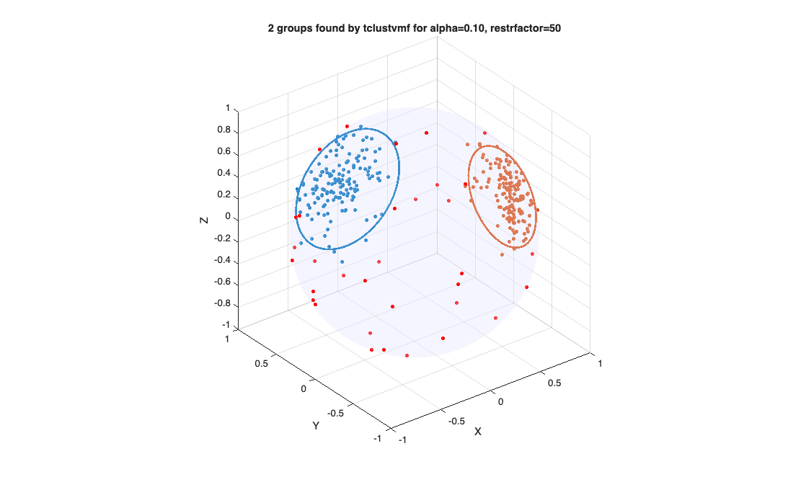
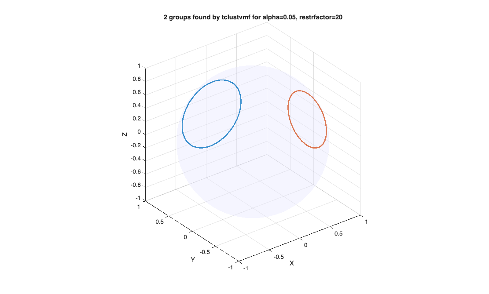
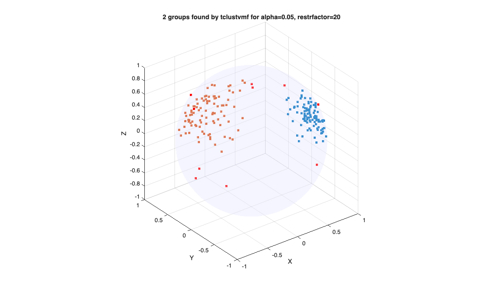
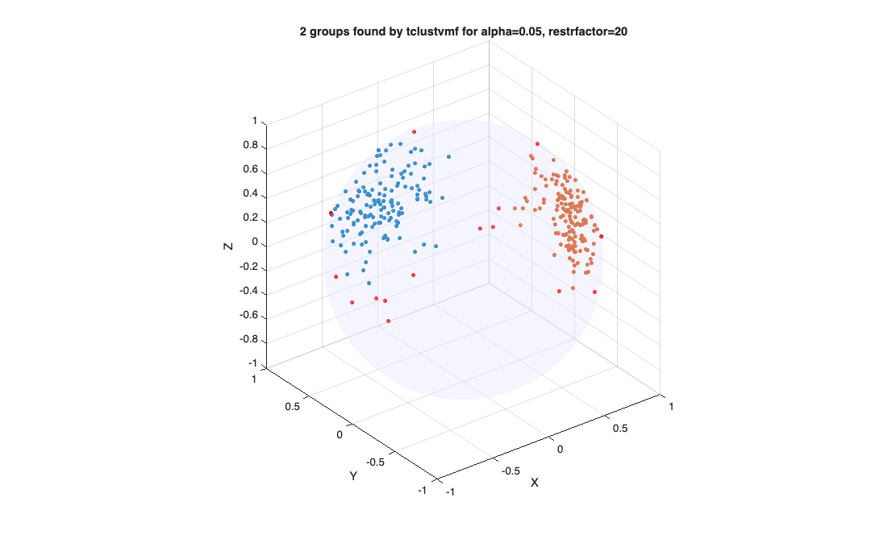
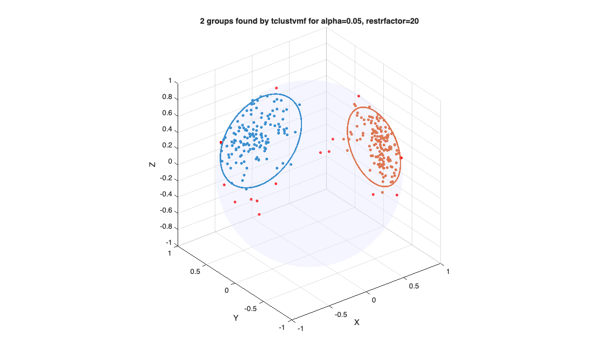
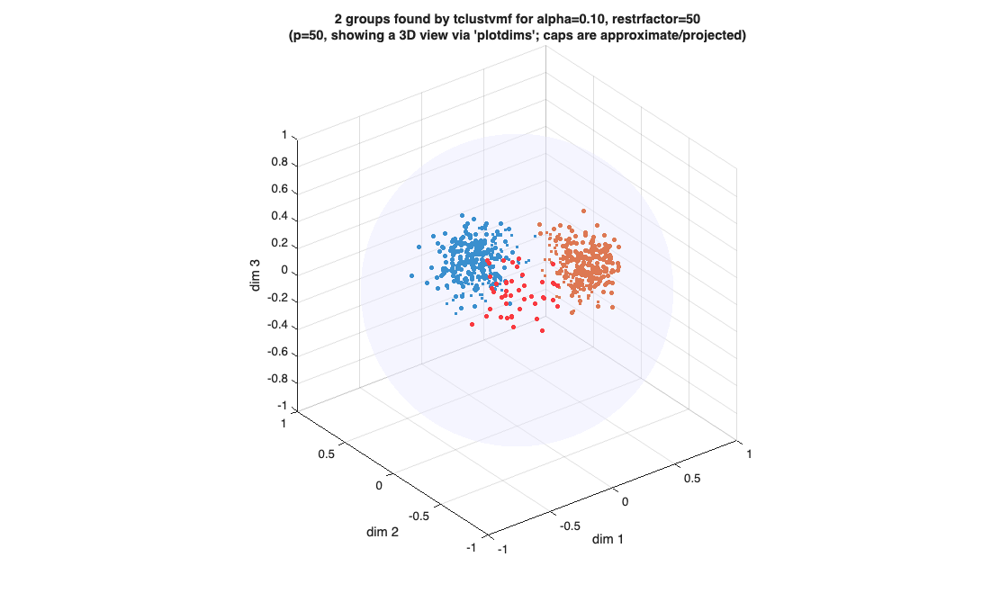
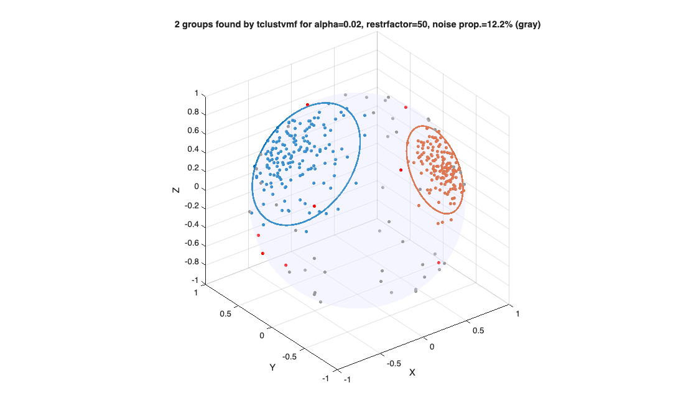

tclustvmf
tclustvmf computes trimmed clustering for directional data using mixtures of von Mises-Fisher distribution
Syntax
Description
tclustvmf partitions the points in the n-by-p data matrix Y, where each row is assumed to be a unit vector on the hypersphere S^(p-1) in R^p, into k clusters. This is the directional-data counterpart of tclust: the multivariate normal model N(mu_j,Sigma_j) is replaced by the von Mises-Fisher (vMF) model vMF(mu_j,kappa_j), where mu_j (a unit vector) is the mean direction and kappa_j>=0 is the concentration parameter of group j. kappa_j is the vMF analogue of the inverse of Sigma_j: a large kappa_j implies a tightly concentrated, "low variance" cluster around mu_j, exactly as a large eigenvalue of Sigma_j^{-1} does in the Gaussian case. The vMF density on S^(p-1) is f(y; mu, kappa) = C_p(kappa) * exp(kappa * mu' * y), where C_p(kappa) is the normalizing constant (see vMFlogC.m) and y is a unit vector. Robustness is achieved via the same impartial ("hard") trimming device used by tclust and tkmeans: at most n-h observations are left unassigned, where h = fix(n*(1-alpha)). A constraint on the ratio max(kappa_j)/min(kappa_j) prevents the classification likelihood from becoming unbounded as a cluster collapses onto a single direction (the vMF analogue of tclust's eigenvalue restriction, which prevents Sigma_j from collapsing to a singular matrix).
Setting restrfactor=1 forces a common kappa across all groups, which reduces the discriminant rule to cosine similarity: this is "trimmed spherical k-means", the exact directional analogue of the relationship between tclust (restrfactor=1) and tkmeans.
Optionally (see option 'noise'), an extra (k+1)-th component modelling uniform "background" noise on the hypersphere can be added alongside the k vMF clusters. This is used together with a typically smaller trimming level: trimming remains a distribution-free safeguard against contamination of unknown/arbitrary shape, while the noise component explicitly captures contamination that is itself uniform on the sphere.
tclustvmf on a synthetic 3-D directional data set, default options.out
=tclustvmf(Y,
k,
alpha,
restrfactor)
Effect of the equalweights option.out
=tclustvmf(Y,
k,
alpha,
restrfactor,
Name, Value)
Examples
 tclustvmf on a synthetic 3-D directional data set, default options.
tclustvmf on a synthetic 3-D directional data set, default options.
tclustvmf on a synthetic 3-D directional data set, default options.. Two vMF clusters (p=3) with 10% trimming and restriction factor 50. Points and 95% confidence caps are drawn.
rng(1) n1=150; n2=150; nnoise=30; mu1=[1 0 0]; kappa1=30; mu2=[0 1 0]; kappa2=15; normalize_rows = @(X) X ./ max(vecnorm(X,2,2), eps); simplevMF = @(mu,kappa,n) normalize_rows(mu + randn(n,3)/sqrt(kappa)); Y = [simplevMF(mu1,kappa1,n1); simplevMF(mu2,kappa2,n2)]; noisePts = normalize_rows(randn(nnoise,3)); Y = [Y; noisePts]; out = tclustvmf(Y,2,0.1,50,'plots',1,'plottype','both');

Effect of the equalweights option.
Effect of the equalweights option.. With equalweights=true the mixing proportions are fixed to 1/k rather than estimated from the data.
rng(1) n1=150; n2=150; normalize_rows = @(X) X ./ max(vecnorm(X,2,2), eps); simplevMF = @(mu,kappa,n) normalize_rows(mu + randn(n,3)/sqrt(kappa)); Y = [simplevMF([1 0 0],30,n1); simplevMF([0 1 0],15,n2)]; out1 = tclustvmf(Y,2,0.05,20,'equalweights',false,'plots',0); out2 = tclustvmf(Y,2,0.05,20,'equalweights',true, 'plots',0); disp(out1.kappaopt); disp(out2.kappaopt);
33.9113 22.4799 22.4799 33.9113
Related Examples
Effect of the mixt option: soft vs crisp assignment.
Effect of the mixt option: soft vs crisp assignment.mixt=0 (default) is crisp CEM; mixt=2 uses the mixture log-density for trimming and a soft M-step.
rng(1)
n1=150; n2=150;
normalize_rows = @(X) X ./ max(vecnorm(X,2,2), eps);
simplevMF = @(mu,kappa,n) normalize_rows(mu + randn(n,3)/sqrt(kappa));
Y = [simplevMF([1 0 0],20,n1); simplevMF([0 1 0],10,n2)];
out0 = tclustvmf(Y,2,0.05,20,'mixt',0,'plots',0);
out2 = tclustvmf(Y,2,0.05,20,'mixt',2,'plots',0);
fprintf('mixt=0 obj=%.2f, mixt=2 obj=%.2f\n',out0.obj,out2.obj);mixt=0 obj=-173.35, mixt=2 obj=-173.26
Effect of nsamp: number of random subsamples.
Effect of nsamp: number of random subsamples.Increasing nsamp improves solution quality at the cost of runtime.
rng(1)
n1=200; n2=200;
normalize_rows = @(X) X ./ max(vecnorm(X,2,2), eps);
simplevMF = @(mu,kappa,n) normalize_rows(mu + randn(n,3)/sqrt(kappa));
Y = [simplevMF([1 0 0],25,n1); simplevMF([0 1 0],12,n2)];
out = tclustvmf(Y,2,0.05,20,'nsamp',100,'plots',0);
Effect of refsteps and reftol: concentration step control.
Effect of refsteps and reftol: concentration step control.Fewer steps speed up the loop; tighter tolerance improves convergence.
rng(1)
n1=150; n2=150;
normalize_rows = @(X) X ./ max(vecnorm(X,2,2), eps);
simplevMF = @(mu,kappa,n) normalize_rows(mu + randn(n,3)/sqrt(kappa));
Y = [simplevMF([1 0 0],25,n1); simplevMF([0 1 0],12,n2)];
out = tclustvmf(Y,2,0.05,20,'refsteps',10,'reftol',1e-08,'plots',0);
The normalize option: rows need not be unit-norm on input.
The normalize option: rows need not be unit-norm on input.When normalize=true tclustvmf rescales each row to unit norm before clustering, so raw (non-normalised) data can be passed directly.
rng(1)
n1=150; n2=150;
% Generate raw (un-normalised) directional data.
Y = [randn(n1,3)+repmat([3 0 0],n1,1); randn(n2,3)+repmat([0 3 0],n2,1)];
out = tclustvmf(Y,2,0.05,20,'normalize',true,'plots',0);
The newtonsteps option: Newton-Raphson steps for kappa estimation.
The newtonsteps option: Newton-Raphson steps for kappa estimation.More steps give a more accurate inversion of the mean resultant length into a concentration parameter (see kappaFS).
rng(1)
n1=150; n2=150;
normalize_rows = @(X) X ./ max(vecnorm(X,2,2), eps);
simplevMF = @(mu,kappa,n) normalize_rows(mu + randn(n,3)/sqrt(kappa));
Y = [simplevMF([1 0 0],25,n1); simplevMF([0 1 0],12,n2)];
out = tclustvmf(Y,2,0.05,20,'newtonsteps',5,'plots',0);
The conflev option: confidence level for the group caps.
The conflev option: confidence level for the group caps.out.ellipse{j} contains the boundary of the conflev cap of group j.
rng(1)
n1=150; n2=150;
normalize_rows = @(X) X ./ max(vecnorm(X,2,2), eps);
simplevMF = @(mu,kappa,n) normalize_rows(mu + randn(n,3)/sqrt(kappa));
Y = [simplevMF([1 0 0],25,n1); simplevMF([0 1 0],12,n2)];
out = tclustvmf(Y,2,0.05,20,'conflev',0.90,'plots',1,'plottype','ellipse');
The ellipsenpts option: boundary resolution of the confidence caps.
The ellipsenpts option: boundary resolution of the confidence caps.More points give a smoother circle when p==3.
rng(1)
n1=150; n2=150;
normalize_rows = @(X) X ./ max(vecnorm(X,2,2), eps);
simplevMF = @(mu,kappa,n) normalize_rows(mu + randn(n,3)/sqrt(kappa));
Y = [simplevMF([1 0 0],25,n1); simplevMF([0 1 0],12,n2)];
out = tclustvmf(Y,2,0.05,20,'ellipsenpts',200,'plots',0);
disp(size(out.ellipse{1}));200 3
The markersize option: point size in scatter plots.
The markersize option: point size in scatter plots.Increase it for small samples or high-resolution displays.
rng(1)
n1=100; n2=100;
normalize_rows = @(X) X ./ max(vecnorm(X,2,2), eps);
simplevMF = @(mu,kappa,n) normalize_rows(mu + randn(n,3)/sqrt(kappa));
Y = [simplevMF([1 0 0],25,n1); simplevMF([0 1 0],12,n2)];
out = tclustvmf(Y,2,0.05,20,'plots',1,'markersize',20);
The msg option: suppress or increase command-window output.
The msg option: suppress or increase command-window output.msg=0 runs silently; msg=1 (default) prints basic progress.
rng(1)
n1=150; n2=150;
normalize_rows = @(X) X ./ max(vecnorm(X,2,2), eps);
simplevMF = @(mu,kappa,n) normalize_rows(mu + randn(n,3)/sqrt(kappa));
Y = [simplevMF([1 0 0],25,n1); simplevMF([0 1 0],12,n2)];
out = tclustvmf(Y,2,0.05,20,'msg',0,'plots',0);
The Ysave option: store the (possibly normalised) data in out.
The Ysave option: store the (possibly normalised) data in out.Y.
rng(1)
n1=150; n2=150;
normalize_rows = @(X) X ./ max(vecnorm(X,2,2), eps);
simplevMF = @(mu,kappa,n) normalize_rows(mu + randn(n,3)/sqrt(kappa));
Y = [simplevMF([1 0 0],25,n1); simplevMF([0 1 0],12,n2)];
out = tclustvmf(Y,2,0.05,20,'Ysave',true,'plots',0);
disp(size(out.Y));300 3
The plots option: draw the classification scatter.
The plots option: draw the classification scatter.plots=1 opens a 3D sphere figure with the final assignment.
rng(1)
n1=150; n2=150;
normalize_rows = @(X) X ./ max(vecnorm(X,2,2), eps);
simplevMF = @(mu,kappa,n) normalize_rows(mu + randn(n,3)/sqrt(kappa));
Y = [simplevMF([1 0 0],25,n1); simplevMF([0 1 0],12,n2)];
out = tclustvmf(Y,2,0.05,20,'plots',1);
The plottype option: points, ellipse or both.
The plottype option: points, ellipse or both.'ellipse' draws only the confidence caps; 'both' adds the data points.
rng(1)
n1=150; n2=150;
normalize_rows = @(X) X ./ max(vecnorm(X,2,2), eps);
simplevMF = @(mu,kappa,n) normalize_rows(mu + randn(n,3)/sqrt(kappa));
Y = [simplevMF([1 0 0],25,n1); simplevMF([0 1 0],12,n2)];
out = tclustvmf(Y,2,0.05,20,'plots',1,'plottype','both');
The plotdims option: viewing high-dimensional data in 3D.
The plotdims option: viewing high-dimensional data in 3D.High-dimensional case (p=50, e.g. embeddings). The clustering itself needs nothing special; only plotting requires choosing a 3D view via 'plotdims', which is not picked automatically.
rng(2)
p=50; n1=200; n2=200; nnoise=40;
mu1=zeros(1,p); mu1(1)=1; kappa1=25;
mu2=zeros(1,p); mu2(2)=1; kappa2=15;
normalize_rows = @(X) X ./ max(vecnorm(X,2,2), eps);
simplevMF = @(mu,kappa,n) normalize_rows(mu + randn(n,p)/sqrt(kappa));
Y = [simplevMF(mu1,kappa1,n1); simplevMF(mu2,kappa2,n2)];
noisePts = normalize_rows(randn(nnoise,p));
Y = [Y; noisePts];
out = tclustvmf(Y,2,0.1,50,'plots',1,'plottype','both','plotdims',[1 2 3]);
The nocheck option: skip the NaN/Inf input validation.
The nocheck option: skip the NaN/Inf input validation.Useful for speed when the data are guaranteed to be clean.
rng(1)
n1=150; n2=150;
normalize_rows = @(X) X ./ max(vecnorm(X,2,2), eps);
simplevMF = @(mu,kappa,n) normalize_rows(mu + randn(n,3)/sqrt(kappa));
Y = [simplevMF([1 0 0],25,n1); simplevMF([0 1 0],12,n2)];
out = tclustvmf(Y,2,0.05,20,'nocheck',1,'plots',0);
The noise option: explicit uniform-background component.
The noise option: explicit uniform-background component.An extra (k+1)-th component models uniform noise on the sphere, used here with a small trimming level (2%). Most uniform contamination is absorbed by the noise component (out.idx==k+1, shown in gray) rather than by trimming (out.idx==0, red).
rng(3)
n1=150; n2=150; nnoise=60;
mu1=[1 0 0]; kappa1=30;
mu2=[0 1 0]; kappa2=15;
normalize_rows = @(X) X ./ max(vecnorm(X,2,2), eps);
simplevMF = @(mu,kappa,n) normalize_rows(mu + randn(n,3)/sqrt(kappa));
Y = [simplevMF(mu1,kappa1,n1); simplevMF(mu2,kappa2,n2)];
noiseY = normalize_rows(randn(nnoise,3));
Y = [Y; noiseY];
out = tclustvmf(Y,2,0.02,50,'noise',true,'plots',1,'plottype','both');
fprintf('Estimated noise proportion: %.1f%%\n',100*out.noiseprop);Estimated noise proportion: 12.2%

Input Arguments
Output Arguments
More About
References
Banfield, J.D. and Raftery, A.E. (1993), Model-Based Gaussian and Non-Gaussian Clustering, Biometrics, Vol. 49, 803-821.
Banerjee, A., Dhillon, I.S., Ghosh, J. and Sra, S. (2005), Clustering on the Unit Hypersphere using von Mises-Fisher Distributions, Journal of Machine Learning Research, Vol. 6, pp. 1345-1382.
(2017), Finding the Number of Groups in Model-Based Clustering via Constrained Likelihoods, Journal of Computational and Graphical Statistics, Vol. 27, pp. 404-416. doi:10.1080/10618600.2017.1390469 (source of CLACLA/MIXMIX/MIXCLA and their relationship to BIC/ICL)
Garcia-Escudero, L.A., Gordaliza, A., Matran, C. and Mayo-Iscar, A.
(2008), A General Trimming Approach to Robust Cluster Analysis, Annals of Statistics, Vol. 36, pp. 1324-1345.
(tclust: the Euclidean parent of tclustvmf)
Hennig, C. (2004), Breakdown Points for Maximum Likelihood Estimators of Location-Scale Mixtures, Annals of Statistics, Vol. 32, 1313-1340.
(limitations of the Banfield-Raftery noise component)
Mardia, K.V. and Jupp, P.E. (2000), Directional Statistics, Wiley, Chichester. (vMF distribution, mean resultant length, kappa estimation)
See Also
tclust
|
tkmeans
|
logvMFpdfFS
|
kappaFS
|
restrKappaFS
|
vMFlogC
|
vMFcap